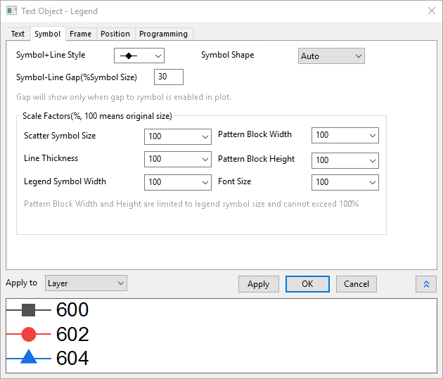
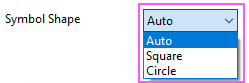
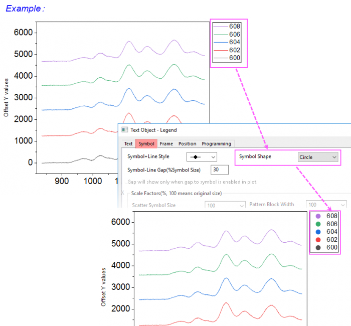
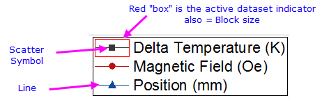

Die Registerkarte Symbol (Eigenschaften des Textobjekts)
TextOb-Prop-Symbol-tab

Die Diagrammlegende ist einfach ein spezielles Textobjekt. Wenn es sich bei dem Textobjekt um eine Diagrammlegende handelt, wird die Registerkarte Symbol zum Dialog Textobjekt hinzugefügt.
Symbol+Linienstil
Verwenden Sie für Linien- und Symboldiagramme dieses Bedienelement, um zu bestimmen, welcher Linien- und Symbolstil in der Legende verwendet werden soll. Bei Linien-, Punkt- und Säulen-/Balkendiagramme hat dieses Bedienelement keinen Einfluss auf die Legendenanzeige.
Symbolform
Verwenden Sie dieses Bedienelement, um zu entscheiden, wie die Symbole im Legendenfeld gezeigt werden.

- Auto: Die Symbolform folgt dem Stil der Zeichnung. Diese Option ist standardmäßig aktiviert.
- Quadrat: Die Symbole werden als "Quadrate“ gezeigt. Die Standardgröße ist 15. Sie können den Skalierungsfaktor mit der Option Punktsymbolgröße in der Gruppe Skalierungsfaktoren ändern.
- Kreis: Die Symbole werden als "Kreise“ gezeigt. Die Standardgröße ist 15. Sie können den Skalierungsfaktor mit der Option Punktsymbolgröße in der Gruppe Skalierungsfaktoren ändern.
Hinweis:
- Bei Linien- und Punkt-Liniendiagrammen sind "Quadrate" und "Kreise" mit der Farbe der Zeichnungslinie gefüllt. Bei Linien-Punktdiagrammen hat das Bedienelement Symbol+Linienstil keine Wirkung, wenn Symbolform nicht auf Auto gesetzt ist.
- Bei Punktdiagrammen sind "Quadrate" und "Kreise" gefüllt, entweder mit der Symbolfarbe oder der Randfarbe der Zeichnung.
- Bei Zeichnungen mit Füllmustern, wie Säulen-, Kreis- oder Boxdiagramme, sind "Quadrate" und "Kreise" offen, die Randdicke und -farbe entsprechen dem Musterrahmen der Zeichnungen, die Füllfarbe folgt der Musterfüllfarbe der Zeichnungen.

Abstand Symbol-Linie (% Symbolgröße)
Wird auf Linien- und Symboldiagramme angewendet. Fügt einen Abstand zwischen der Linie und dem Symbol im Legendeneintrag hinzu. Der Abstand zum Symbol muss auf der Registerkarte Linie des Dialogs Details Zeichnung aktiviert sein, damit dies funktioniert.
Skalierungsfaktoren (%, 100 entspricht der Originalgröße)
Sie können bei diesen beiden Kombinationsfeldern aus der Auswahlliste wählen oder eine Zahl in das Feld eingeben. Beachten Sie, dass die Kennzeichnung des aktiven Datensatzes eingeschaltet werden kann, so dass die maximale Höhe und Breite des Symbolblocks gezeigt werden (auf Grafikebene des Dialogs Details Zeichnung oder indem Sie mit der rechten Maustaste auf die Legende klicken und Legende: Aktiven Datensatz kennzeichnen wählen).
-

| Punktsymbolgröße |
- In das Feld können Zahlen größer als 100 eingetragen werden.
- Die Symbolgröße ist durch die Textgröße der Legende beschränkt (Registerkarte Text). Durch Vergrößern der Schrift können größere Symbole verwendet werden.
- Wird auf Linien- und Symboldiagramme sowie Punktdiagramme angewendet.
|
| Liniendicke |
- In das Feld können Zahlen größer als 100 eingetragen werden.
- Wird auf Linien- und Symboldiagramme sowie Liniendiagramme angewendet.
|
| Symbolbreite der Legende |
- In das Feld können Zahlen größer als 100 eingetragen werden. Bei 100 folgt die tatsächliche Breite der Einstellung auf der Registerkarte Legende/Titel des Dialogs Details Zeichnung.
- Dieses Bedienelement wird verwendet, um die Breite der Kennzeichnung des aktiven Datensatzes anzupassen. Die interne Blockbreite ist beschränkt auf die Größe der Kennzeichnung des aktiven Datensatzes der Legende.
- Das Erhöhen der Legendentextgröße (Registerkarte Text) vergrößert die Höhe/Breite der Kennzeichnung des aktiven Datensatzes.
- Wird auf Diagrammtypen angewendet, die ein Legendensymbol im Blockstil, wie z. B. Säulen-/Balken- und Flächendiagramme und Linien-+Symbol- oder auch Liniendiagramme, verwenden.
|
| Musterblockbreite |
- In das Feld können keine Zahlen eingegeben werden, die größer als 100 sind.
- Wenn die Kennzeichnung des aktiven Datensatzes wird festgelegt. Sie können dieses Bedienelement verwenden, um die interne Blockbreite anzupassen. Wenn die Zahl kleiner als 100 ist, entstehen Abstände vor und nach dem Block, innerhalb der Kennzeichnung.
- Wird auf Diagrammtypen angewendet, die ein Legendensymbol im Blockstil, wie z. B. Säulen-/Balken- und Flächendiagramme und Linien-+Symbol- oder auch Liniendiagramme, verwenden.
|
| Musterblockhöhe |
- In das Feld können keine Zahlen eingegeben werden, die größer als 100 sind.
- Sie können dieses Bedienelement verwenden, um die interne Blockhöhe anzupassen. Wenn die Zahl kleiner als 100 ist, entstehen Abstände vor und nach dem Musterblock, innerhalb der Kennzeichnung.
- Wird auf Diagrammtypen angewendet, die ein Legendensymbol im Blockstil, wie z. B. Säulen-/Balken- und Flächendiagramme und Linien-+Symbol- oder auch Liniendiagramme, verwenden.
|
| Schriftgröße |
- In das Feld können keine Zahlen eingegeben werden, die größer als 100 sind.
- Sie können dieses Bedienelement verwenden, um den Faktor der Schriftgröße anzupassen. Wenn die Schriftgröße auf der Registerkarte Text auf 18 gesetzt ist, legen Sie den Faktor der Schriftgröße mit 50 fest. Dann wird die Schriftgröße in 9 angezeigt, während die tatsächliche Schriftgröße noch immer 18 ist (auf der Registerkarte Text oder im Feld des Tooltipps).
|
Anwenden auf
Die benutzerdefinierten Anpassungen im Dialog des Legendenobjekts werden auf anderen Legendenobjekte angewendet. Beachten Sie, dass einige Legendenanpassungen, wie diejenigen, die Sie auf den Registerkarten Text oder Programmierung vorgenommen haben, können nicht auf andere Legendenobjekte angewendet werden.
| Layer |
Wird nur auf den aktuellen Layer angewendet. Beachten Sie, dass der Layer unterstützt nur ein einzelnes Legendenobjekt. |
| der Dateninfos |
Wir auf alles im Fenster (Seite) angewendet. |
| Ordner |
Wird auf alles im aktuellen Projektexplorer-Ordner angewendet. |
| Projekt |
Wird auf alles in der aktuellen Projektdatei angewendet. |